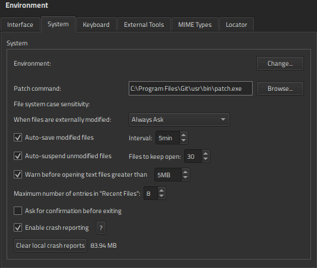

Reporting Crashes
You can enable Qt Design Studio to report crashes automatically. Qt Design Studio uses Google Crashpad to collect crashes and report them to the Sentry backend storage for processing. The purpose of Crashpad is to capture application state in sufficient detail to allow developers to diagnose and, where possible, fix the issue causing the crash. Crashpad may capture arbitrary contents from the memory of a crashed process, including user sensitive information, URLs, and other content provided by the users. The collected reports are used for the sole purpose of fixing bugs. For more information on Crashpad, see the documentation by Google. For more information on processing and storing of the collected data, see Security & Compliance by Sentry.
To enable sending crash reports, select Edit > Preferences > Environment > System (Qt Design Studio > Preferences > Environment > System on macOS), and then select Enable crash reporting.
Since crash reports take up disk space, you may wish to remove them when they are no longer needed. Select Clear local crash reports to remove the crash report data.

Note: Crashpad is currently only supported on Windows and macOS.